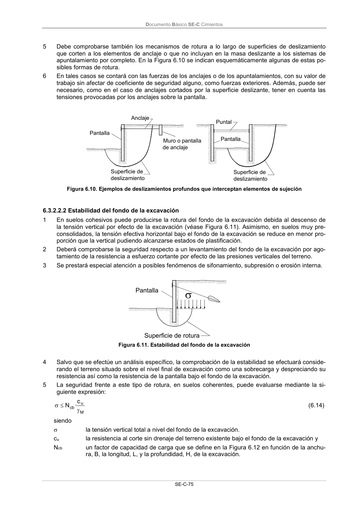

DB-SE-C · 6.3.2.2.2 Estabilidad del fondo de la excavación · versión 2019-12-20 · capa oficial
Formatos: JSON compacto · Markdown · PDF fuente
Ámbito del documento · texto del ámbito · documento y tablas
ID técnico a0166 · PDF pág. 80 · jerarquía no validada por persona · contrastado con el literal de la página 80 (candidato tipográfico); no validado por persona · padre: a0164
6.3.2.2.2 Estabilidad del fondo de la excavación 1 En suelos cohesivos puede producirse la rotura del fondo de la excavación debida al descenso de la tensión vertical por efecto de la excavación (véase Figura 6.11). Asimismo, en suelos muy pre- consolidados, la tensión efectiva horizontal bajo el fondo de la excavación se reduce en menor pro- porción que la vertical pudiendo alcanzarse estados de plastificación. 2 Deberá comprobarse la seguridad respecto a un levantamiento del fondo de la excavación por ago- tamiento de la resistencia a esfuerzo cortante por efecto de las presiones verticales del terreno. 3 Se prestará especial atención a posibles fenómenos de sifonamiento, subpresión o erosión interna. Pantalla Superficie de rotura

PDF fuente redistribuible: copia fiel enlazada en esta página (SHA256 verificado).